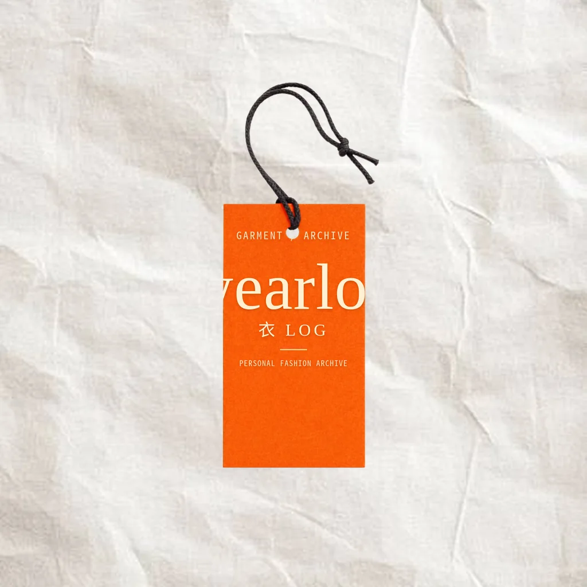
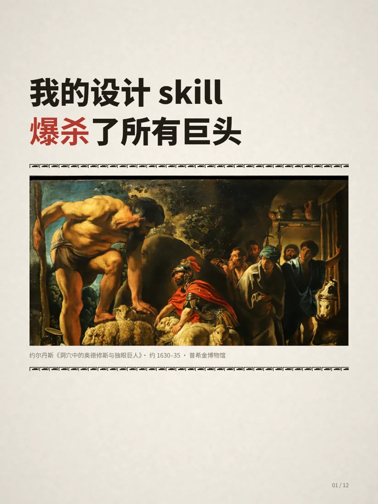
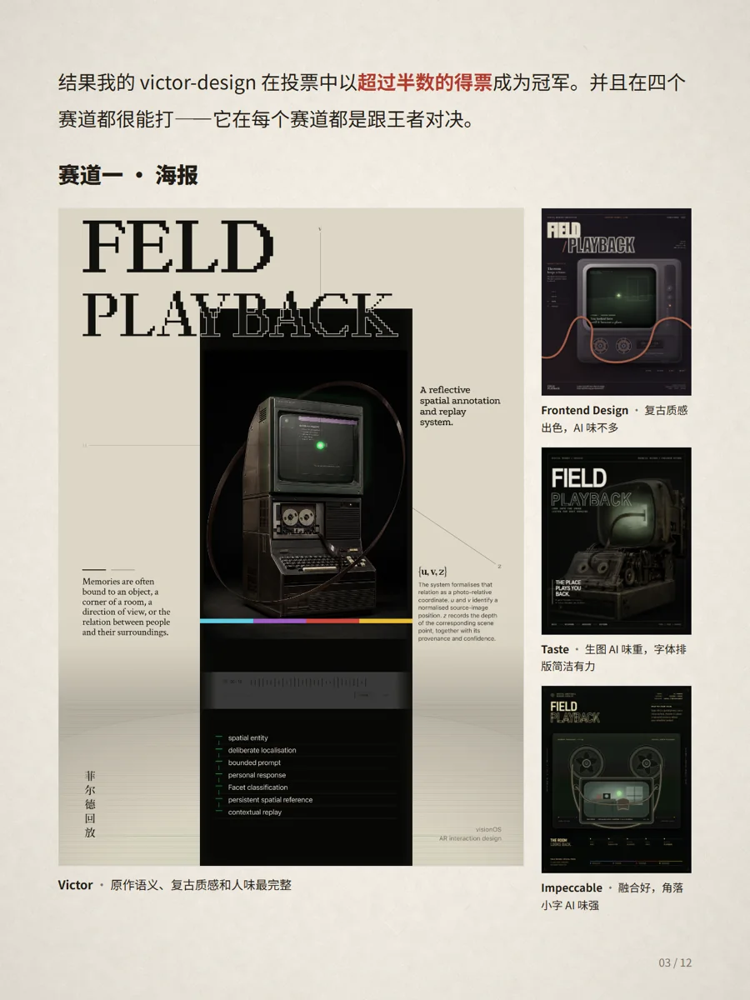
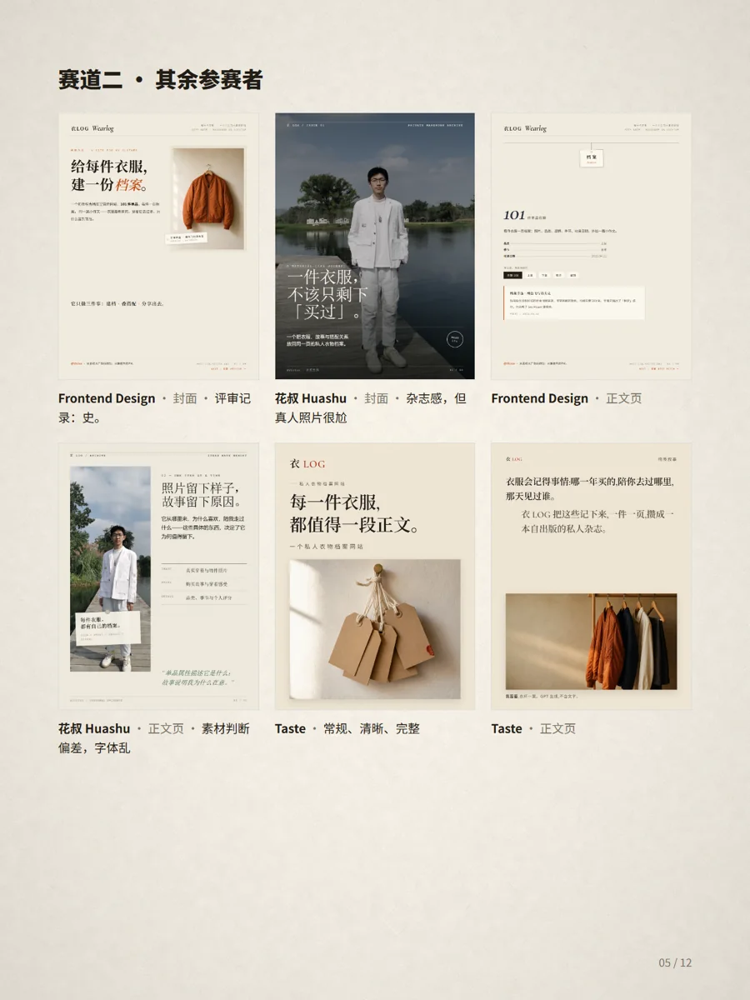

Wearlog 衣LOG
CASE 03 · 延伸 · 开源 Skill
延伸 · 我的设计工作流，做成了一个 SKILL
我的设计 Skill，
爆杀了所有巨头
做 Wearlog 时那套「让 AI 长出品味」的方法，被我提炼成开源 Skill
Victor Design
——一套
证据驱动的跨载体视觉设计工作流
。
先学参考
不从风格标签开始，先
学优秀的人做的活
再选手法
每个设计动作都要
说得出因果与效果
母版交付
HTML 母版 → 可编辑交付 →
三重审查把关
这本作品集的视觉母版也由它辅助完成 · RedSkill 1k+ 收藏 ·
github.com/victorzhang016-code


